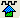
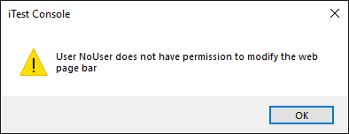
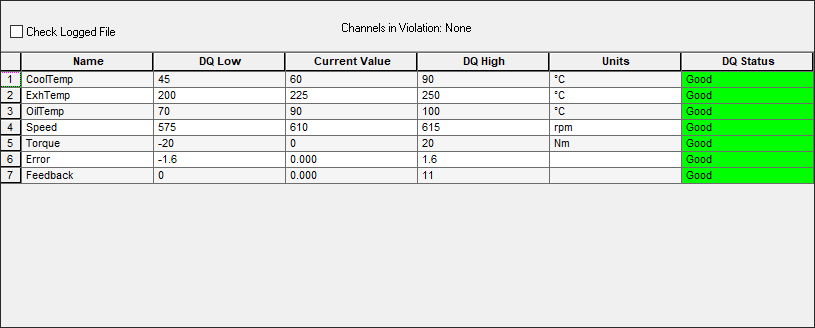
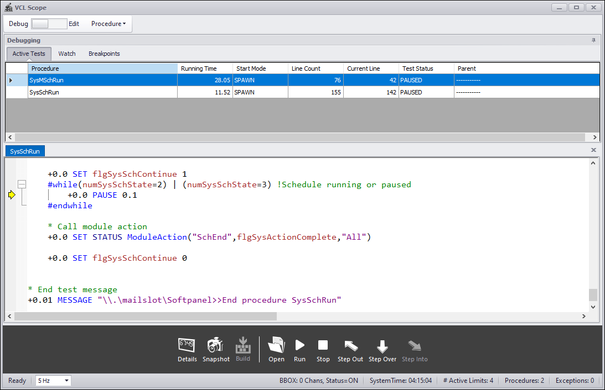

iTest User's Guide
iTest Console Operator's Guide
Product Version 4.5
Prepared By
ADT Software Engineering
A&D Confidential Document Distributable only to A&D Customers
Copyright A&D Company, Limited
A&D Technology Inc.
The iTest Console software supports operator screens used for controlling all major test cell functions and cell related activities. It is designed to be a highly flexible user interface, operating synchronously with the data acquisition system to display the status of test data and related equipment. Through use of the iTest Console, the operator maintains control over the test cell and is able to gather specific data for analysis. The system designers and operators can access screen definition tools during test-building environment as well as runtime. This guide discusses the use of iTest Console for performing tests, using solutions that have been previously defined by an iTest test designer. This manual does not discuss the use of advanced iTest tools or development utilities, but rather the basics of interacting with the various screens and windows, as well as use of related utilities launched during a routine session of iTest Console.
iTest Console Overview
When iTest Console is first launched, the Select Solution dialog displays. For more information about the Select Solution dialog, refer to the Select Support documentation.
iTest Console provides a simple, partially customizable toolbar by default. The toolbar is populated with several buttons that will launch many of the utilities present in iTest. To toggle this toolbar on or off, select View > Tool Bar from the iTest Console menu bar.
Toolbar
Custom buttons are user configurable buttons that can trigger VCL procedures. The leftmost button always has a red background while any additional custom buttons have green backgrounds.
To define one or more custom buttons, use the CustomButtonText and CustomButtonProc powertek.ini settings. Each setting uses a comma-separated list to define multiple buttons.
CustomButtonText=Stop,Init,Start CustomerButtonProc=SysStop,SysAutoReady,SysAutoStart
CustomButtonText powertek.ini setting, the $SUPPORTDIR\iTest.wsp file will have to be deleted to update the toolbar's appearance.
 |
NOTE: | Deletion of the iTest.wsp file results in a loss of all user made modifications to the shape and location of the iTest Console GUI windows. |
The runtime test control interface allows a user to control a particular test depending on the options selected.
Once a test is selected, you will be allowed to execute the test manually by clicking the Run button.
|
NOTE: | iTest only permits one test to be run at a time. |
The test control interface in iTest Console will appear similar to the following, provided you have defined a schedule test:
Test Control Interface
Any time a new test is selected iTest will prompt you to close the existing one if one is already visible in the main display area. This helps ensure that there is never any more than one active test.
For all test types, the functionality of the Start and Stop buttons will be the same. However, the rest of the buttons will have different functionality and appearance depending upon the test type selected.
The following table describes the standard buttons of the Test Control Toolbar.
Test Control Toolbar Icon Descriptions
| Icon | Description |
| Tests: | Allows you to choose one of the schedule/procedure tests that have been configured for your solution. This dropdown will be grayed out if there is a test already running. |
| Start test. This button will be grayed out if there is a test already running. If this is a schedule test, then a defined start procedure will be spawned. | |
| Stop test. This button will stop a test that is currently running. If this is a schedule test, then a defined stop procedure will be spawned. | |
| Reload schedule test. This button will save any changes made to file, update the runtime memory, and run a defined reload procedure. This option is only enabled if the schedule is unlocked. | |
| Lock/Unlock. Clicking this toggle button will either Lock or Unlock the currently active schedule test for editing. | |
| Pause procedure test. This button will suspend the running procedure test. | |
| Resume procedure test. This button will resume where the procedure test left off. This option is only available if the procedure is currently suspended. |
The following powertek.ini setting enables the iTest software to display the BAR file name rather than the actual test name associated with the toolbar.
TCTBShowBarFileName=TRUE
This setting may already be present in the powertek.ini depending on the solution you're using. If it is not, iTest will default to FALSE and will therefore display the actual test name in the dropdown of the Test Control Toolbar.
The Signal Bar is a quick reference tool available in iTest Console used to monitor the values and other attributes of iTest channels during runtime. The Signal Bar is accessed by selecting View > Signal Bar from the iTest Console main menu. By default, the Signal Bar will appear as a docked window to the right of the main window, but it can be undocked to appear as a floating window.
The first column displays the limit of a channel or signal. The second column displays the channel identifier (Channel Name, Alias, Module Name, or Customer Name) as set from Tools > Options on the menu bar. The third column displays the current EU or string value for the channel. The fourth column is configurable to display any RDB field value.
Signal Bar
Each list can be sorted in ascending or descending order by clicking on the column headers. In addition, you can sort the channels being monitored at any point by clicking through the built-in filters via the tabs at the bottom of the signal list. Additional filtering is available through the Filtering... right-click option.
Filter Tabs
Tab Descriptions
| Tab | Description |
| Filters to display only Virtual Output channels. | |
| Filters to display only Analog Output channels. | |
| Filters to display only Analog Input channels. | |
| Filters to display only Temperature channels. | |
| Filters to display only Frequency channels. | |
| Filters to display only Digital Output channels. | |
|  | Filters to display only Digital Input channels. |
| Filters to display only Timer channels. | |
| Filters to display only Virtual String channels. | |
| Filters to display only System Channels. | |
| Filters to display only channels in a user configured list (i.e., Favorites). The Add... right-click menu option is used to add and remove channels from this tab. | |
| Displays All channels. |
Only the options described below are supported in the Signal Bar's right-click menu.
The Add... right-click option is only available in the Favorites tab. It opens the Select Channels dialog window. This window is used to add and remove channels from the listing in the Favorites tab.
Select Channels Dialog
The RDB Fields... right-click option is available in each tab. It opens a listing of all available RDB fields. This list is not filtered based on which tab is currently selected in the Signal Bar. Once a selection is made from this list, the fourth column's column header will be updated to reflect your selection and each channel's RDB field value will be displayed in this column.
RDB Fields
The Filtering right-click option is available in each tab and opens the Signal List Display Filter dialog window.
Filtering Right-Click Option
*Signal List Display Filter
Filter Descriptions
| Filter | Description |
| No Filter | Removes any filter applied through the Signal List Display Filter. |
| File Name | Filters to only display channels listed in the selected Channel Definition file. |
| Module Name | Filters to only display channels that are in the selected Module's Channel Definition file(s) and have not been assigned to a system channel. |
| Device Name | Filters to only display channels associated with the selected device. |
| Sub String | Filters to only display channels whose name contains the given sub string. |
The Diagnostic... right-click option is available in each tab and opens the Channel Control dialog window. This window displays information about the selected channel and, if the channel is an output, it can be used to change the channel's current value.
Double-clicking on a channel in the Signal Bar has the same effect as this right-click option.
Example of a Virtual Output Channel
To switch to viewing limits in the Signal bar, send the following mailslot message:
\\.\mailslot\Atlas>>MONITOR_LIMITS
Once the mailslot is received, the first column's header will change to Limits.
The following icons will be visible in the first column of the Signal Bar for any iTest channel configured for limits monitoring. Limits must be active for an icon to appear.
Icon Descriptions
| Icon | Description |
| Indicates that limits are active and the channel has exceeded the Low Warning threshold. | |
| Indicates that limits are active and the channel has exceeded the Low Limit threshold. | |
| Indicates that limits are active and the channel has exceeded the High Warning threshold. | |
| Indicates that limits are active and the channel has exceeded the High Limit threshold. | |
| Indicates that limits are active and the channel has not exceeded any Limit or Warning thresholds. |
Placing the cursor over the icon will display a tooltip that shows the limit thresholds for this channel.
Example Tooltip
The condition of each channel can change based on the following:
The Signal Bar also supports the $SignalBar mailslot message to Softpanel. This message can be used to programmatically modify the displayed tab, RDB field, and to sort the visible channels. More details are available in the Softpanel Mailslot Message Reference List.
The Message Bar displays both system messages and softpanel messages. Drag the message bar pane to open a separate message bar window. You can either move this window around on your screen or you can dock it to either side of the GUI.
The Command Bar in the Console contains several panels that allow you to configure and control the Tools, Displays, Actions, and Websites that you will use to help run your tests in iTest. Right-clicking in any of these panels will pull up a standard menu that offers basic editing options for all panels, as well as the ability to add a new tool, action or website where applicable.
Right-Click Menu Options
The Command Bar is a dock-able window, which means you can either leave it in its fixed position on the left side of the Console, drag it to another location, or undock it and remove it from view.
To drag it to another location, simply click in the space directly above the Command Bar and drag it to another location on your screen. You can drag it back to the original fixed position or to a different one by repeating this step and dragging it to your location of choice. There are a few areas in the Console that allow the Command Bar to be docked.
Command Bar Location
To remove the Command Bar from view, simply click on the X at the top right. You can bring it back by clicking View > Command Bar from the View Menu (or Ctrl+Alt+C) at the top of the Console.
Close Command Bar
For a good example of how to add a new tool to your Command Bar, see the procedure outlined in the Mailer section further down in this document.
To add a new Action in the Command Bar, complete the following steps. For this example, we'll add an action to send a mailslot message.

\\.\mailslot\<mailslot name>
To add a new Web Page in the Command Bar, complete the following steps.

The system will allow you to have up to five (5) different web links open at a time, and each of them will have its own tab at the bottom of the screen. To extend the maximum number allowed, you’ll need to add the MaxWebPages entry to the powertek.ini file (if it’s not already there) and assign a value.
The data log status dialog is accessed by selecting Tools > Data Logs... from the iTest Console main menu. This dialog can be used to monitor the status of all active data logs in iTest including those started by automated tests or started manually. In addition, you can use it to start new logs, stop and cancel running logs, view a data file with DataMiner, and create a temporary (quick) log.
The data log status dialog is shown here:
Data Log Status Dialog
Data Log Status Dialog - Column Descriptions
| Column | Description |
| First cell text, row one | Second cell text, row one. |
| Name | Name of the data log. |
| Status | Idle, Logging or Waiting for channel. |
| Type | Average, Snapshot or Transient. |
| Duration | Duration of the log. The duration will count down once the log goes from Idle to Logging. |
| Wait Channel | This channel must be set to one (1) before the data log will start. The current value is in parenthesis. |
| File | File name the output data log will be written to. Subfolders are not supported. |
Data Log Status Dialog - Interface Descriptions
| Item | Description |
| Start | (Button) launches the selected log, if it is not already running. |
| Stop | (Button) stops a running average or transient log. This action also creates an output file with all accumulated data, up to the current point. |
| Abort | (Button) cancels the log and does not create an output file. |
| DataMiner | (Button) launches the DataMiner application and displays the output file on the DataMiner's primary interface. To access DataMiner, refer to the customer portal at support.aanddtech.com then add the DataMiner file to the $EXECUTEDIR folder. |
| New Quick Log | (Button) Displays the Quick Data Log (dialog displayed and described below). |
| Data Log Events | Text field that displays messages received from the logging subsystem since the dialog was initialized. Each time the dialog is exited and restarted, the window is emptied. |
Quick Data Log Dialog
This screen is used to create a temporary data log. These logs will continue to appear in the Data Log Status window until iTest exits. When iTest is re-started, all quick logs created will be gone. The logs can be managed in the Data Log Status Window in the same way as permanent logs. They can be started, stopped, cancelled, and viewed. In the Data Log Status dialog, quick logs will appear in a blue font in the list and permanent logs will appear in a black font.
Quick Data Log Dialog - Interface Descriptions
| Field | Description |
| Log Name | Give the quick log a name for the Data Log Status Window. |
| Log Type | Average, Snapshot or Transient. |
| Rate | Rate (in Hz) to use for sampling average log data or logging transient data. |
| Duration | Duration of the Average or Transient log in seconds. |
| Log Order List | Name of the LOL file to use. |
| Output Filename | File name the output data log will be written to. Subfolders are not supported. |
You can manually change the way the Console displays label fields and/or performs unit conversions in certain displays and display objects in iTest.
To change the default global option for the System Display Label Field to reflect either the Channel Name, Module Name, Customer Name or Alias, simply click Tools > Options from the File menu of the Console and select your label of choice from the left of the following dialog:
Options Dialog
Changing this setting in the Console will affect the way channels are displayed on the following displays and display objects:
Changing the base unit in iTest is just as simple as changing the label field and even uses the same dialog, but you do need to know a little bit about how unit conversions are performed in iTest first.
All unit conversions are driven by the value contained in the Base (SI) Unit column, as shown below in the Test Manager units editor screen:
Base (SI) Unit
The default display unit is Original Units, which is the unit that is defined in the channel definition file. To change the display unit to reflect the Base (SI) Unit, select Tools > Options from the File Menu of the Console and check the SI Units radio button.
SI Units Option
In the case of Celsius (row 11 in the screenshot above) values will now convert to Kelvin, which is the conversion listed in the Base (SI) Unit column of the unit conversions spreadsheet.
To put this into perspective, let’s say you created a display to track the values of 3 virtual outputs: voDemo1, voDemo2, and voDemo3 with starting units of Celsius, Fahrenheit, and Kelvin, respectively. You then set the conversion unit to SI Unit in the options menu. For degrees Celsius, the SI Unit is Kelvin, so the system will then add 273.15 to make the proper conversion.
Likewise, if you changed one of the Kelvin values in your display from 273K to 97K and then chose the Metric Units option in the Tools > Options menu, the system will change the value to -176 degrees Celsius in your display (actual channel value).
Kelvin Values
Since all conversions are based off the Base (SI) Unit, if I wanted to convert a Celsius value to English Units (Fahrenheit) the system would first need to convert the value to Kelvin, the Base (SI) Unit, by adding 273.15 degrees. The system would then convert the Kelvin value to Fahrenheit, which is the English unit.
|
NOTE: | All conversions are done in the displays only. RDB values are left in original units. |
To log into iTest Console, click File > User Login from the File Menu at the top of the Console.
iTestConsole User Login
Once you have logged in, you can log out at any time by selecting File > User Logout. However, when you log out your status changes to "No User", which means you will no longer have permissions to do anything substantial within iTest Console. You must be logged in before you can make any changes within the system.
When you attempt to launch an application that you do not have permissions for, a message like the following appears in the message queue indicating that you do not have adequate permissions:
System Messages
Likewise, if you try to perform a task that you are restricted from, the following dialog box will appear:
No Permission

Complete the following procedure to edit a test while it is running.
|
NOTE: | The test should remain on one particular step during this operation or else the new information will be lost. |
If you are using a standard solution from A&D, the following buttons are available on the pre-defined Test Control Toolbars.
Test Control Toolbar Button Descriptions
| Icon | Description |
| Tests: | Allows you to choose one of the tests/procedures that have been configured for your solution. This dropdown will be grayed out if there is a test already running. |
| Start test. This button will be grayed out if there is a test already running. | |
| Stop test. This button will stop a test that is currently running. | |
| Reload test. This button will save any changes made and then update the runtime memory. This option is only enabled if the schedule is unlocked. | |
| Lock/Unlock. Clicking this toggle button will either Lock or Unlock the currently active test for editing. | |
| This custom button will test the active display for the selected test. | |
| Hold test. This custom button will pause the test at the current step. | |
| This custom button will resume where the test left off. |
To add a new step to a schedule, simply open the schedule in the Console, Unlock it, right-click anywhere in the schedule, and then click Add Step. A new step will be placed at the end of the schedule. To insert multiple steps, right-click, select Add Many Steps, and enter the number of steps in the dialog that displays. Click OK to add these steps to the end of the schedule.
Unlock Schedule and Add Step
To insert a step at a specific row of the schedule, navigate to that row, right-click, and select Insert Step. A new step will be inserted right prior to the current step. To insert multiple steps at a specific row of the schedule, navigate to that row, right-click, and select Insert Many Steps.
Make sure to lock the schedule once you’ve finished adding and configuring your steps.
To delete a step or steps in a schedule, simply open the schedule in the Console, Unlock it, and highlight the row to be deleted by clicking on the row’s title (column 1). Right-click on the row and select Delete Step.
To delete multiple rows, select the first row you want deleted by clicking on the title. Next, drag downward until all of the rows you want deleted are highlighted. Right click in the highlighted area and select Delete Step.
Make sure to Lock the schedule once you’ve finished deleting your steps.
You can Start or Stop a schedule at any time by clicking on the corresponding icons on the Test Control Toolbar.
|
NOTE: | Your solution may need to be in a "Ready" state before you can successfully start a schedule. |
Following are the right-click options available when editing a test in the Console:
Right-Click Options and Descriptions
| Option | Description |
| Freeze Columns | Locks the columns from the first row in the spreadsheet to the selected column. Frozen columns do not scroll when you scroll horizontally through the document. |
| Unfreeze Columns | Unlocks columns frozen by the Freeze Columns option. |
| Insert Step | Inserts a step at a specific row in a schedule. |
| Insert Many Steps | Inserts a user-defined number of steps at a specific row in a schedule. A dialog will be displayed where you can enter the number of steps you wish to insert. |
| Add Step | Adds a new step under the last step in the schedule. |
| Add Many Steps | Adds a user-defined number of steps under the last step in the schedule. A dialog will be displayed where you can enter the number of steps you wish to add. |
| Delete Step | Deletes the selected step. You will get a prompt asking you to confirm the deletion. |
| Import From CSV | Imports the contents of any comma-separated value file into an existing schedule. The following dialog will be displayed: |
| View Schedule | Opens the selected schedule in the Schedule View dialog. Set Plot Properties before viewing a schedule. |
| Plot Properties | Opens the Plot Configuration dialog box in which you can plot the values on the schedule. |
| Copy | Copies the selected cell or row. |
| Paste | Places the cell or row that is saved to the clipboard in the selected location. |
Step Tasks and Step Conditions allow iTest schedules to develop full tests without using VCL. This is done by utilizing three specific columns in the standard solution.
|
NOTE: | The iTest application provides the framework for this feature. Legacy applications must be updated to take advantage of it. |
The three columns in the standard step schedule are called StepTask1, StepTask2, and StepTask3. Each of these columns allows you to define a complex logical expression that gets evaluated when that particular step is reached, and then associate some action that occurs when the expression evaluates to TRUE. The expression to be evaluated is called a step condition, and the condition, together with the action, is referred to as a step task.
Step Tasks
The tasks identified in the three columns of any particular schedule step are joined by OR operands, indicating that the step task condition achieved first takes priority. It will then prompt the system to take the associated, defined action for moving forward in the test schedule.
Each schedule step can contain multiple step conditions associated with these step tasks. Conditions are evaluated continuously while the schedule is executing that step. The schedule can advance to the next step based either on step time or if a step condition evaluates to TRUE. Each step condition has a logical expression and an associated action to perform if the conditional evaluates to TRUE.
Each individual step task is defined by the following items:
To set the step task action, locate the columns labeled StepTask1, StepTask2, and StepTask3. Double-click in any of these columns to open the Step Task Check Setup dialog. Select the drop-down next to the Execute field to select what action occurs.
Step Task Columns
Set Step Task
The available step task actions and their arguments are described in the table below:
Step Task Actions - Descriptions and Arguments
| Option | Description | Argument |
| Change Log Time | Supports high-speed logging during the transient part of a step; it then changes to snapshot logs for the remainder of the step. | New Log Time (in seconds) |
| End Step | Stops the step immediately and proceeds to the next scheduled step. | None |
| Go To Step | Ends the current step and goes to the specified step number indicated in the dialog. | Valid Step Number or Label |
| Increment Value | Adds a constant value to the current value of a channel; subtracts if a negative value is used. Syntax similar to "set value": channel +1, where 1 can be any numeric value. To decrement: channel +-1 | Channel + Value |
| Jump To Step | Jumps ahead to specified step indicated in the dialog. | Valid Step Number or Label |
| Pause | Holds the test until a ResumeSchedule command is received. | None |
| Pause GoToStep | Resumes from Pause and the test goes to the user-entered step number rather than the next step. | Valid Step Number |
| Save Value | Writes the channel name and value to the circuit's INI file so the value can be restored when iTest is restarted. | Alias Name |
| Set Value | Sets a channel or parameter to a value with the syntax channel=value. To set multiple values simultaneously, separate the channel=value inputs by semicolons. value can also be a simple expression with operators +, -, * or /. For example,Cntr1=Cntr2+Cntr3;Cntr4=Cntr1;Counter4=Counter2*6.Note: String channels are not supported. |
Channel = Value |
| Start New File | Supports breaking a potentially extremely large data file into smaller sections. It appends three digits to the current data file name starting at "001". Each time this action is executed the extender is incremented by 1. If this action is executed after the extender reaches "999", it results in an error message, and the extender is not incremented. | None |
| Start Procedure | Launches the procedure asynchronously (spawn). The procedure name can be entered directly or selected from a picklist. The Start Procedure picklist is defined in the picklist file set by the EOSActionPickList= powertek.ini setting (e.g., EOSActionPickList=SysActions).Any necessary procedure arguments should be included in parentheses; for BTS, a special circuit index argument is typically required (i.e., <procedure name>($index$)). |
Procedure Name |
| Stop Test | Stops the Schedule Runner from running the schedule. | None |
| Start Log | Starts the specified data log | name of data log or name of Virtual String containing the name of the data log |
| Stop Log | Stops the specified data log | name of data log or name of Virtual String containing the name of the data log |
| Module Action* | Sends a module action to the selected module(s). For more information, refer to the ModuleAction documentation. | Module(s) and Action. Both are selected from predefined fixed lists. |
| System Action* | Sends a system action to the selected module(s). For more information, refer to the SystemAction documentation. | Module(s) and Action. Both are selected from predefined fixed lists. |
| Stop Master Schedule** | Prematurely stops the master schedule at its current step. | None |
| End Loop** | Ends the loop on its current step. | None |
| Top of Loop** | Ends the current step and proceeds to the first step of the loop. | None |
| Pause Master Schedule** | Holds the test in its current position until a ResumeSchedule command is received. | None |
| Spawn Python Script** | The specified script is started when the condition is met the first time. Choosing this option enables you to specify a script in the Script String field. | Python Script Name |
In one of the step task columns of the schedule, you can create a new step task and then create the step condition for that task directly in the schedule, as shown below:
Step Condition
Each step condition supports the following:
Limits are iTest's method of providing both safety checking and some event-based processing of actions based on a channel reaching a user-defined value or set of values. Each scalar numeric channel in iTest can have up to four limit ranges configured, and each range can have a defined action that occurs when the channel's value crosses into that range. These ranges can be changed dynamically from a test or manually from certain screens in the Console.
As a channel's value crosses into a new limit range, messages are sent to the iTest message queue. Messages have a fixed format and are an additional visual. The image below shows a typical message queue of limit messages:
Message Queue
The messages always have this format:
Limits <status> on <channel name> [value= <channel value> ]
where,
<status> is one of OK, Low Warning, Low Limit, High Warning, or High Limit.
<channel name> is the label for the channel that violated the limit. This could be a channel name, module name, or customer name depending on your display label.
<channel value> is the value that caused the limit to trigger.
In addition to messages, limits will cause a channel's displayed value to change to a specific color depending on its current status. If limits checking is enabled, almost all locations in iTest will display the value with the following pre-defined colors:
Red = A limit threshhold has been violated.
Yellow = A warning threshhold has been violated
Green = Everything is fine.
These colors will be visible on iTest display objects such as the ADTDigital, ADTGauge, and ADTBar objects, iTest Console Signal Bar, and AlarmStatus.
AlarmStatus is an important program for the operator to use at runtime to monitor and manage the list of channels with limits while iTest is running. Depending upon the options set in your solution, the operator can have a different level of control using AlarmStatus. Some locations allow an operator to add and delete channels with limits, temporarily disable some channels, and edit limit ranges and actions, all while iTest is running.
AlarmStatus Limits Inactive
For more information regarding the use of AlarmStatus, see the AlarmStatus documentation.
The Signal Bar is a quick reference tool that can also be used to display the current limits of a channel. For more information on how to use the Signal Bar to display limits, see the Limits Monitoring section of this document.
All limit mailslot messages are handled by Data_Engine. They are as follows:
LimitsVer=3.2 in the powertek.ini file, then the applied limit group replaces the current limits settings. Otherwise, the limit group is applied with a layered approach.For more information regarding mailslot messages, see the DataEngine Mailslot Messages List documentation.
Control loops are Proportional Integral Derivative (PID) controls that regulate high-speed dynamometer, throttle control and other test system control processes. PID controls stabilize a process or device at a commanded setpoint. These controls are also used to track a setpoint. PID coefficients are set according to the response characteristics of a control system.
A control can be defined as a process regulator, which regulates engine speed and load with a dynamometer or throttle actuator. For more information, see the Control Theory documentation.
The following table describes some general terms used when defining PID controls:
General Terms and Descriptions
| Term | Description |
| Setpoint | The desired value of what is being controlled (e.g., speed, load, temperature, or pressure). |
| Feedback | The measured value of the controlled variable. |
| Error | The signal derived from the difference between the setpoint and feedback. |
| Control | The output derived from error. Control minimizes the difference between setpoint and feedback. |
| Closed loop control | In this mode, the control system continually calculates error and adjusts the control channel to reduce error to zero. Tuning settings affect the adjustment amount applied to the control channel. Tuning takes into account the magnitude of external disturbances to the process, as well as the sensitivity of the process to the control element (e.g., the effect of valve position on pressure). |
| Open loop control | In this mode, the control system no longer adjusts the control channel to correct for error. This allows for manual control, which is recommended only for slow processes. When the system is not running, this mode lets you modulate a valve or actuator to check its performance. In certain cases, a PID loop is switched from closed to open loop control to lock a valve or actuator in place for the remainder of a test. |
The primary operator interface for switching control modes and manually changing setpoints is called the PID Control dialog. It is an "on-top" dialog box that floats on top of the Console's main window. The main purpose of the PID Control dialog is to allow you to control the current value of the Dyno and Throttle PIDs. It also allows you to change the current PID mode pair that the Dyno and Throttle are currently operating under.
PID Control Dialog Overview
To access the PID Control dialog (if it's not already visible), select Tools > PID Control from the File menu.
The PID Control Box document describes the use of the mode control dialog.
PIDs can also be fine-tuned in the PID Tune Utility in order to help manage the control more efficiently. For more information, see the PIDTune documentation.
Control modes, also referred to as mode pairs, are logically combined pairs of PID control loops used to effectively control a test system such as an engine dynamometer system. Common control pairs include:
In an engine dynamometer system, for example, the first loop typically represents the dynamometer control loop and the second represents the engine throttle control loop.
Control modes are always configured as a 2-loop pair, with HS1/HS2 being the most common. So if you want to change your HS1, you still have to signify what your HS2 is going to be.
Typical control mode group names are HS1, HS2, LS1, LS2, … LS20 (where, HS=High Speed, LS=Low Speed), but these are user configurable and can be named something more appropriate (e.g., Dyno and Throttle). There can be any number of loops defined under each group, but only one can run at a time. The relationship between the individual PIDs in a PID group is that only one loop in each group can be run at a time.
As mentioned above, the standard modes for dyno/throttle modules are:
Spd/Pos Spd/Trq Trq/Pos Trq/Spd
There is also a Runtime Configurable mode in which the user can select the feedback channel for the throttle PID. When this is utilized, the mode set will change to the following:
Spd/Pos Spd/Trq Spd/X Trq/Pos Trq/Spd Trq/X
The X loop is added to the throttle loop group, and the mode list is extended to provide 2 new mode pairs.
For more information, see the Using X Mode documentation.
The following mailslots can be used to determine how the PID Control looks and functions:
Mailslots
| Mailslot Message | Description |
| $SHOWPIDCONTROL | Shows the PID Control dialog. |
| $HIDEPIDCONTROL | Hides the PID Control (can be restored via the menu). |
| $RAMP | Brings up the manual ramp interface on the PID control box. |
| $RAMPOFF | Turns off the manual ramp interface. |
| $AUTO | Disables the PID Control dialog box. The PID Control will be grayed out and in read-only mode. |
| $MANUAL | Re-enables the PID Control dialog box. |
There are several powertek.ini settings that control the behavior of PIDs in the system. These can be found in the Powertek.ini Settings documentation.
The Data Quality feature is a runtime verification tool that enables you to define data quality limits for channels in your system. The channels are continuously monitored and if they exceed the defined limit, the violation is communicated via the interface. Data quality limits are different than safety limits, and are used in the following ways:
iTest continually monitors channels to determine whether their current values match a pre-defined rule. If the channel value violates the rule, the following actions are performed:
DQHandlerDefault, although this can be replaced by another procedure).For complete information regarding data quality, refer to the iTest Data Quality documentation.
The following evaluations used to determine the quality of the data:
The runtime interface for Data Quality consists of two items: the status bar and the data quality viewer.
The iTest Console status bar, located at the bottom of the application, visually communicates the data quality status of your channels with data quality enabled. If channels are in data quality violation, the number of channels violating data quality will be indicated and the status color will also be reflected. A good status is reflected on the bar in gray. This field is controlled by the channel, voSysDQStatus, which you can use to prevent operators from starting a test if the value is anything other than 0. The status bar remains visible regardless of which layout is open.
Good Data Quality Status
Data Quality in Violation
You view a more detailed account of the data quality channels, their values, and their status using the Data Quality Viewer. To access this, click Tools > Data Quality from the iTest Console main menu.
Navigate to Data Viewer
The following view displays in iTest Console, containing the channel information and configured settings.
Data Quality Viewer

By selecting the Check Logged File checkbox, a drop-down displays, enabling you to view the data quality for logged data. Use the drop-down to choose a file and view its data.
Select a Log File
View Logged File Data
You can change the range for data quality values at different points during a test. Data Quality groups are enabled with the DQGroupApply Data_Engine mailslot message.
To enable groups of upper and lower values to be swapped out at runtime, use the following Data_Engine mailslot message:
\\.\\mailslot\Data_Engine>>DQGroup Apply <groupname>
By default, iTest displays data quality values that are within range in green and values that are out of range in yellow. Alternatively, yellow can be used as a warning range and red can be used to indicate that values are out of range. To use this option, modify the DQStatusThreeColor powertek.ini file, located in your $SUPPORTDIR folder. Without this option, the range is automatically calculated by 50% green and 50% yellow. The new color setting only affects the display in the iTest Console Data Quality Viewer.
INI Option:
DQStatusThreeColor=TRUE
Without INI Option
With INI Option
There are three Softpanel mailslot messages for managing the Data Quality Viewer:
DATAQUALITY – Displays the Data Quality Viewer.DATAQUALITYCLOSE – Closes the Data Quality Viewer.DATAQUALITYFILE;datfilename – Displays the viewer with the specific logged data file that is specified in the mailslot message.To utilize the accept and reject data feature, the following .INI option must be defined in the powertek.ini file located in your installation's $SUPPORTDIR:
DQStatusChannels=statschan,commentchan
Where:
statschan and commentchan are the channels that hold the channel value and the comment when you accept or reject data. These channels must be added to the .LOL file designed for your tests.
The processes for accepting/rejecting data differs slightly between iTest Console and AutomationPanel. Use the following sections as necessary, depending on the console type you are using.
To accept or reject data points in iTest Console, do the following:


iTest lets you create and edit on-screen displays in which you can add display objects to view and manipulate channel data. There are four types of displays in iTest: Standard, Right, Softpanel, and Dialog.
Display Types
| Control | Description |
| Standard | These displays are visible in the display area of the Console. They are accessible from the Command Bar or by selecting Displays > Standard from the toolbar. |
| Right | These displays appear on the iTest Console if the Global Setting for number of monitors is greater than 1. Typically, you should define the starting position and size using the Display Properties dialog. |
| Softpanel | The Softpanel display is the message bar, which is normally at the bottom of the window, but is movable and dockable. |
| Dialog | These are custom-sized displays that are only accessible using a mailslot message to Softpanel. Dialog displays are floating windows with definite size and starting positions, and are typically used to notify an operator of some exceptional event, or to retrieve information from an operator. They are also used to provide task-specific controls. Use the following VCL to display a dialog: "\\.\mailslot\Softpanel>>$CUSTOMDISPLAY;MyDialog.dsp"Where MyDialog.dsp is the name of the Dialog display. In addition to initializing dialogs using VCL, action buttons can be created on the toolbar to initialize them. To programmatically close a dialog (for example, from a button on the dialog itself), send the DIE message to the display. "\\.\mailslot\MyDisplay>>DIE"This technique also works to close standard and right displays. |
The following screenshot shows the location of both the Standard and Right display sections in the Console:
Standard and Right Display Sections
The Softpanel display appears docked at the bottom of the Console by default, but it can be undocked and docked elsewhere or else left as free floating.
Softpanel Display
The menu bar consists of the following display objects that can be added to a display and configured:
Menu Bar
Menu Bar Descriptions
| Control | Description |
| Gauges and meters (ADT Gauge) | Display channel data, target values, data quality, limit state and high/low values. For complete details on this object, see ADT Gauge. |
| Buttons (ADT Button) | Send mailslot messages when turned on and off. Buttons can also adjust channel values and operate as checkboxes and radio buttons. For complete details on this object, see ADT Button. |
| Drop-down lists (ADT Combo) | Display a picklist of values from which users can choose during runtime on the iTest Console, or to send a mailslot message. For complete details on this object, see ADT Combo Box. |
| Data Entry fields (ADT Data Entry) | The ADT Data Entry control allows you to configure a data entry field that accepts user-entered data during runtime on the iTest Console. The data that is entered can then be used to assign a value into a channel. You can also use the ADT Data Entry control to ask users a question that allows them to input test data that is not measured by the data acquisition system. For complete details on this object, see ADT Data Entry. |
| Digital Indicators (ADT Digital) | Display one or more channel values using different colors. These are based on any configured limits and/or warnings. For complete details on this object, see ADT Digital. |
| Indicators (ADT Indicator) | Display message strings and/or color bars that change depending upon the value of an associated database channel. For complete details on this object, see ADT Indicator. |
| Bars (ADT Bar) | Display a channel name and its value using a digital value and a bar that changes length to indicate the channel’s magnitude. If configured, operators can change the value on the bar using sliders. For complete details on this object, see ADT Bar. |
| Static images (ADT Image) | Display .JPEG, .BMP, .ICO, or .DIB images. For complete details on this object, including field definitions and properties, see ADT Image. |
| Text (ADT Title) | Display static text boxes. For complete details on this object, see ADT Title. |
| Separator lines (ADT Separator) | Adds structure to the display. In addition, you can change the control’s foreground and background colors to create depth on a display. For complete details on this object, see ADT Separator. |
| Stripcharts (ADT Strip Chart) | Graphically plot the status of selected database channels over time. Channel values display as a series of scrolling lines in the strip chart. For complete details on this object, see ADT Stripchart. |
| ADT Chart Plus | This control combines features of both a XY Plot and a Strip Chart with some additional enhancements. The ADT Chart Plus control has two modes, XY Plot mode and Strip Chart mode. In XY Plot mode the control graphically plots the values of selected database channels over the specified X-axis channel. In Strip Chart mode, the control graphically plots the values of selected database channels over the specified time range. For complete details on this object, see ADT Chart Plus. |
| ADT Array Chart | The ADT Array Chart display object allows you to insert a chart object that will display all of the values of an array channel. For complete details on this object, see ADT Array Chart. |
| ActiveX dropdown | This dropdown allows you to choose and Insert an ActiveX control onto your display. This legacy feature is not actively supported and and may or may not appear on your installation. |
You can edit a running display by right-clicking in a blank space of the display in the main display area and clicking the Edit Display option, or you can choose the Edit Display button from the toolbar.
Edit Display Right-Click Option
Edit Display Icon
In either of these cases, a display must already be opened and visible in the main display area.
Once in Edit mode, you may edit any of the display objects on your display as well as add new objects from the menu bar.
When in Edit mode, the following right-click options are available to you:
Edit Mode Right-Click Descriptions
| System Type | Description |
| Display Properties | Opens the Display Properties dialog box in which you can assign attributes to the entire display. |
| Insert New Object | Opens the Insert Control dialog box in which you can select any available control to insert on the display. |
| Paste | Pastes the display object from the clipboard. |
| Save | Automatically saves the changes based on the previously saved name/location (this feature is not always available). |
| Save As | Brings up a Save As dialog that allows you to change the display name to something else. |
| Draw Line | Allows you to draw free-form lines on a display. When you select this option and release, the hand icon will appear. Move the mouse to where you want to begin the line and then hold the left mouse button to draw the line. To interact with a line that has already been drawn, hover the mouse over either end point of the line. Left click and drag to move the end point, or right click to delete, edit the properties, or add/remove arrows to the endpoints. |
| Undo/Redo | iTest allows you to undo and redo your actions in the Display Editor. Any change to a display can be undone, and the default depth for undo is 40 actions. To undo or redo an action, simply right-click in the grid area of the Display Editor and choose the appropriate option. The Ctrl-Z shortcut key is supported for the undo option. |
| Run Display | This allows you to revert back to runtime mode (toggles with Edit Display). |
You can save a display by choosing either of the following two options:
Save Display Descriptions
| System Type | Description |
| Save | Automatically saves the changes based on the previously saved name/location. |
| Save As | Brings up a Save As dialog that allows you to change the display name to something else. |
When a standard or custom screen displays in the iTest Console, the screen has a mailslot that takes the name of the screen. As a result, you can issue mailslot messages to individual screens. These mailslot messages take the following form:
\\.\MailSlot\DisplayName>><message>
Display mailslot messages are used primarily for programmatically changing a display at runtime. These messages give you control over all visual aspects of the display objects and can enable you to construct some very powerful displays.
|
NOTE: | The Permit Runtime Changes option must be enabled in a display object's properties in order to allow any changes. |
The following procedure displays a good example of how mailslot messages are used in the Power Map test module:
$PROCEDURE Test2ChartOil level=0 $RETURN None * Begin test message *0.0 MESSAGE "\\.\mailslot\Softpanel>>Begin procedure Test2ChartOil" * Updates the main display X-Y plot object * Stop the plot * Plot is automatically cleared when axes are changed MESSAGE "\\.\mailslot\Test2>>$PLOTSTOP" * Set Y axis for Coolant MESSAGE "\\.\mailslot\Test2>>$SETITEMPROPERTY Test2Plot ChannelName tSysSpec1Coolant" MESSAGE "\\.\mailslot\Test2>>$SETITEMPROPERTY Test2Plot YTitle Coolant" MESSAGE "\\.\mailslot\Test2>>$SETITEMPROPERTY Test2Plot YAxisMin 20" MESSAGE "\\.\mailslot\Test2>>$SETITEMPROPERTY Test2Plot YAxisMax 120" MESSAGE "\\.\mailslot\Test2>>$SETITEMPROPERTY Test2Plot YMajorTick 20" MESSAGE "\\.\mailslot\Test2>>$SETITEMPROPERTY Test2Plot YMinorTick 5" * Set Y2 axis for Oil MESSAGE "\\.\mailslot\Test2>>$SETITEMPROPERTY Test2Plot ChannelName2 tSysSpec1Oil" MESSAGE "\\.\mailslot\Test2>>$SETITEMPROPERTY Test2Plot Y2Title Oil" MESSAGE "\\.\mailslot\Test2>>$SETITEMPROPERTY Test2Plot Y2AxisMin 20" MESSAGE "\\.\mailslot\Test2>>$SETITEMPROPERTY Test2Plot Y2AxisMax 120" MESSAGE "\\.\mailslot\Test2>>$SETITEMPROPERTY Test2Plot Y2MajorTick 20" MESSAGE "\\.\mailslot\Test2>>$SETITEMPROPERTY Test2Plot Y2MinorTick 5" * Set X axis for Time (note that Channel Name and Title are null) MESSAGE "\\.\mailslot\Test2>>$SETITEMPROPERTY Test2Plot XChannelName " MESSAGE "\\.\mailslot\Test2>>$SETITEMPROPERTY Test2Plot XTitle " MESSAGE "\\.\mailslot\Test2>>$SETITEMPROPERTY Test2Plot XAxisMin 0" MESSAGE "\\.\mailslot\Test2>>$SETITEMPROPERTY Test2Plot XAxisMax 1200" MESSAGE "\\.\mailslot\Test2>>$SETITEMPROPERTY Test2Plot XMajorTick 200" MESSAGE "\\.\mailslot\Test2>>$SETITEMPROPERTY Test2Plot XMinorTick 50" * Start the plot MESSAGE "\\.\mailslot\Test2>>$PLOTSTART" * End test message *+0.01 MESSAGE "\\.\mailslot\Softpanel>>End procedure Test2ChartOil" $END-PROCEDURE
Mailslot Messages
| Mailslot Message | Description |
| $INVOKEC | SYNTAX: $INVOKEC name methodInvokes the OLE control method on the control name. If a name is not specified, DisplayDriver tries to invoke the method for all controls. The method should have the following format: methodname (param 1, param 2, ..., param n)Typically, this command is for custom displays that use the prompt control for user input. After a prompt control’s value has been changed, the prompt’s value is written back to the database if the following method is invoked using the message: \\.\MailSlot\CustomDisplayName>>$INVOKEC SaveText() |
| Causes a Print dialog box to display so users can print a hard copy of a Display screen. SYNTAX: \\.\MailSlot\DisplayName>> >$PRINT |
|
| DIE | Causes the display screen to exit. Typically, this command is used when a customer display is shown with an OK or Cancel button. Typically, the custom display’s button would have a mailslot message in the following form:\\.\MailSlot\DisplayName>> >Die |
The Module Configuration Display appears from various locations in iTest. In iTest Console, select the Tools > Module Configuration menu item. A variation of the following dialog will appear:
Module Configuration Dialog
In most cases, all modules in the solution will appear in the dialog. However, if you selected option two above and selected only a specific module, then only that module will appear.
The Module Configuration dialog allows you to set the Status of each module. Once you choose the Status, iTest will set a channel in the <MID>.ini file to either -1, 0, or 1 (see table below). A module's procedures and calculations are then limited to what they can do based on this channel setting.
Status Descriptions
| Status | Setting | Description |
| Required | -1 | Module is Required. You cannot enable or disable a module at runtime. |
| Enabled | 0 | Module is Enabled. Module configuration can still be modified during runtime. |
| Disabled | 1 | Module is Disabled. Module configuration can still be modified during runtime. |
In addition to enabling and disabling modules, you can change how the module will react to fault responses that occur while the module is communicating with its device. Each fault response can be set to Action, Notify, or None. Action indicates to let the default action embedded in the module occur if there is a fault. Notify indicates to send a message to the message queue and show the module as faulted, but do not take the action. None indicates that the fault should be ignored.
The fault responses are also categorized. The operator can distinguish between faults that occur during startup, manual mode, and automated test. A different response can be selected for each module in each state of operation.
Descriptions
| Item | Description |
| Select Starter Module | Selects the module responsible for starting the engine. Typically, this is the dyno/throttle or engine module. |
| Startup | Selectable fault response for system start-up phases (e.g., Ready, Reset, Starting). Action – Fault response will result in defined action. Notify – Fault will notify user with operator prompt. None – Module will not fault. |
| Running | Selectable fault response for system running (e.g., Started but not running test). |
| Test | Selectable fault response when running a test (e.g., Started and running a schedule test). |
| Fault | Indicates fault condition of module. |
iTest offers an enhanced, standalone Mailer program which allows you to open your own receive mailbox for testing. This is done by adding the Mailer program to your User-Defined tools. To add the Mailer tool to your Command Bar, complete the following steps:
The TestStatusDisplay interface displays a list of procedures that are currently running. This is a user-defined tool that can be accessed by clicking Tools > User Defined Tools > TestStatusDisplay.
TestStatusDisplay Interface

For more information, refer to the TestStatusDisplay documentation.
One way of launching the TestStatusDisplay application is to first add it to your tools on the Command Bar.
To stop a running test, right-click on a procedure name, and then select Abort Procedure to display the VCLScope dialog box. If the test is an executed procedure, it cannot be aborted. You will be prompted to abort the test from the outermost procedure.
The Blackbox is a data recorder with a circular buffer used to record data at a user-defined rate and length of time. The Blackbox Viewer window (bbviewer) displays Blackbox data in a spreadsheet format.
Select Tools > User Defined Tools > Black Box to open the bbviewer window in the console. The bbviewer window has four menus: File, Edit, View, and Help.
|
NOTE: | You cannot run bbviewer while iTest is running unless the iTest channel crs_control=0. |
Blackbox Viewer
File Menu Options
| Command | Description |
| Generate blackbox.dat | Converts Blackbox binary data into ASCII text to be displayed in a spreadsheet or text editor. |
Edit Menu Options
| Command | Description |
| Find | Displays a Find dialog box in which you can search the Blackbox window for specified text. |
| Font | Displays a Font dialog box in which you can specify text attributes for text in the Blackbox window. |
View Menu Options
| Command | Description |
| Refresh | Updates the spreadsheet with the most current data. |
| All | Overrides all settings specified in the Filter dialog box. |
| Filter | Opens the Filter dialog box in which you can select the information that you want to display in the bbviewer window. |
| Freeze Rows | Locks the rows from the first row in the spreadsheet to the selected row. Frozen rows do not scroll when you scroll through the document. |
| Unfreeze Rows | Unlocks rows frozen by the Freeze Rows option. |
| Transpose | Reverses the row and column layout of the file in the bbviewer window. |
| Toolbar | When selected, displays the bbviewer toolbar. |
| Status Bar | When selected, displays a status bar in the lower portion of the bbviewer window. |
The Calibration utility lets you calibrate one or more channels assuming that all selected channels require the same stimulus to calibrate. The Calibrate dialog box lets you perform a full, multiple-point calibration, or zero/span compensation.
To open the Calibrate utility in the Console, click the  button from the toolbar or choose Tools > Calibrate from the file menu. The Select Channel(s) for Calibration dialog box will be displayed:
button from the toolbar or choose Tools > Calibrate from the file menu. The Select Channel(s) for Calibration dialog box will be displayed:
Calibrate Utility
For more information, see the Calibrate documentation.
If your iTest system is being monitored by LabCentral for test cell utilization reports, a prompt will appear each time the engine changes state, or stops running. You configure the time in which this prompt appears in LabCentral by setting a UUT Active Channel flag along with the channel name that represents whether the engine is running. When this prompt appears in iTest it will ask you to select a reason from the dropdown (also configured in LabCentral) that explains why the engine changed state.
|
NOTE: | For the Select a Status Change Reason dialog to appear, your iTest system must have been added to LabCentral and utilization must be enabled for your iTest system. |
Status Change Reason Dialog
iTest can support many different solutions or applications. It ships with a demonstration application called Solution.Demo. It is possible that the application you are running has been designed to match your unique environment and testing needs. If this is the case, it is probable that no standard documentation exists. However, if you have a standard solution (such as BTS), a document describing your solution may be available from A&D as a separate document.